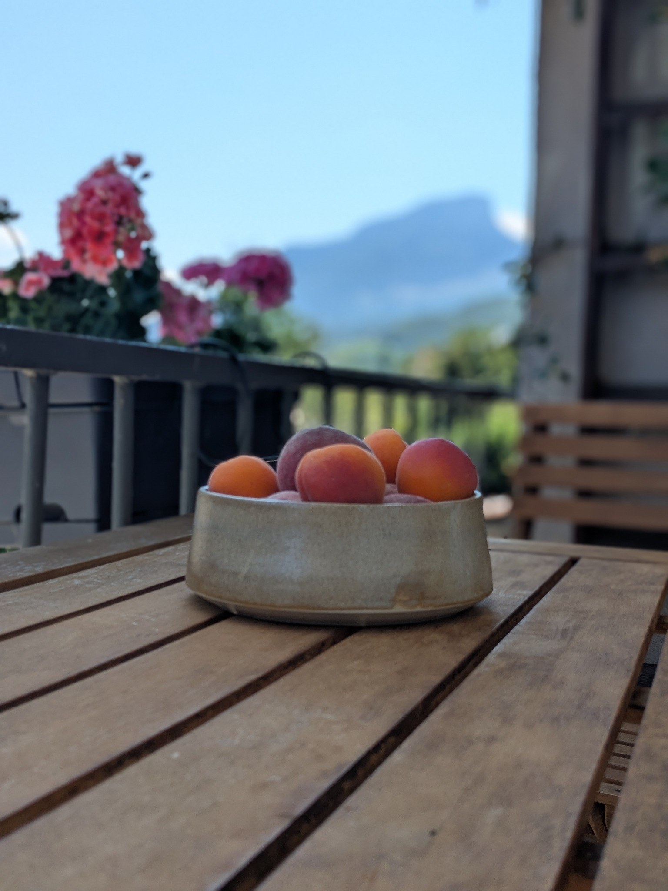
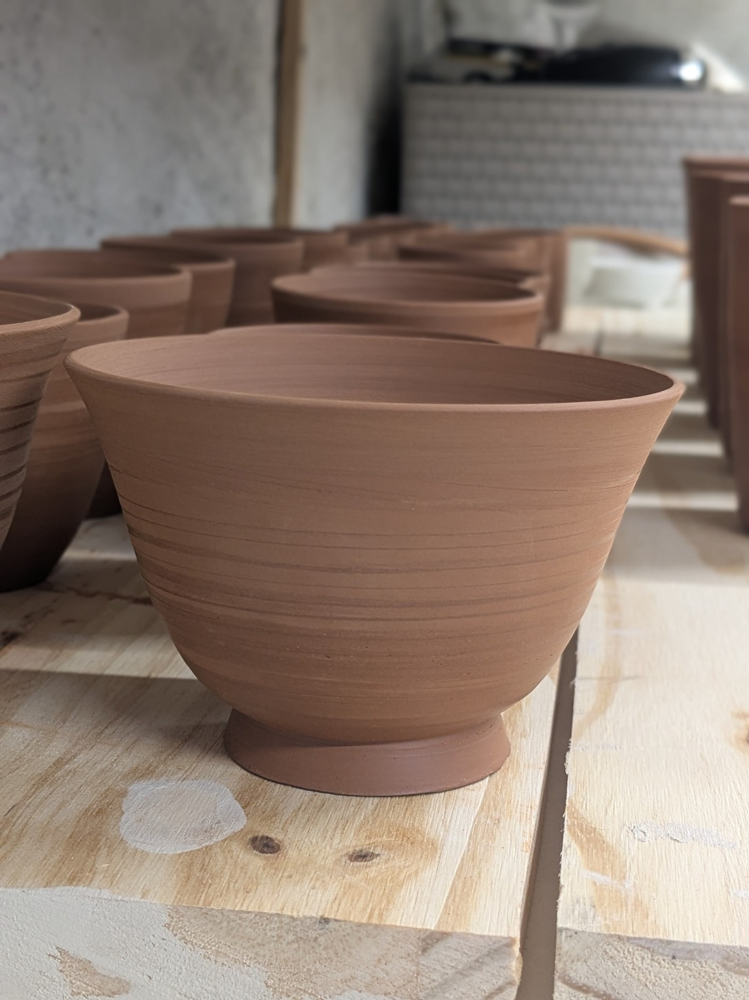
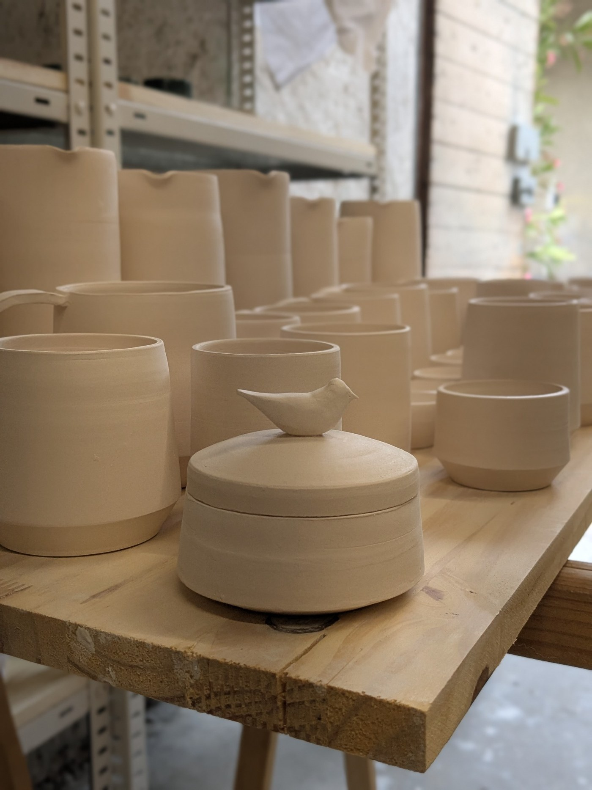
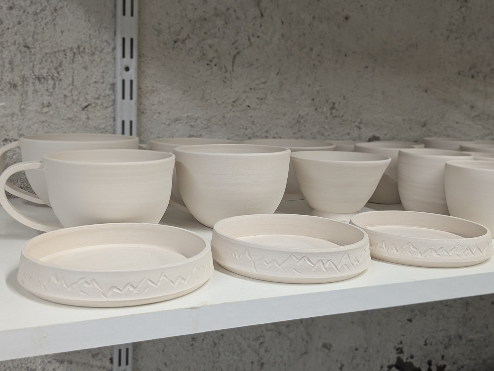
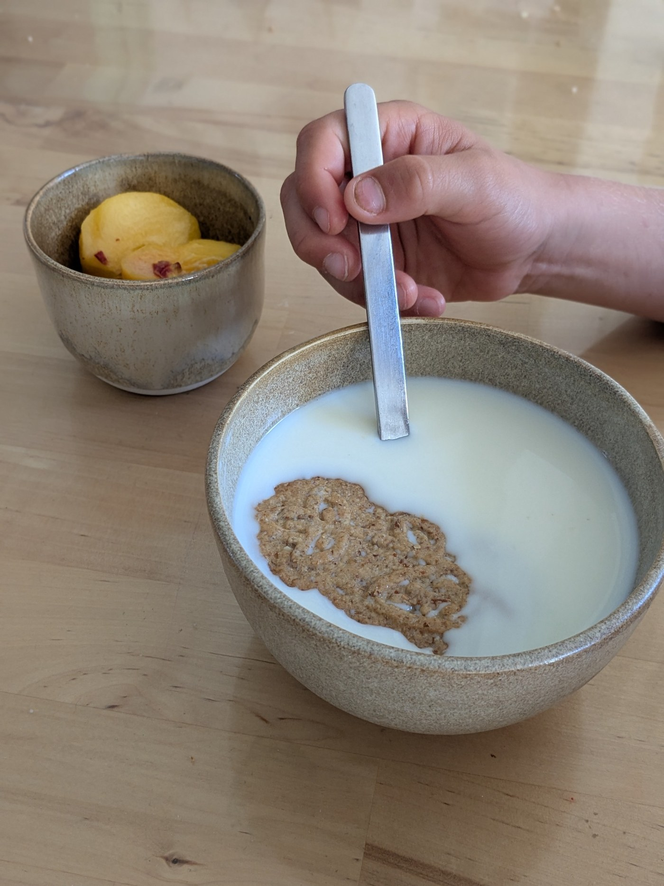
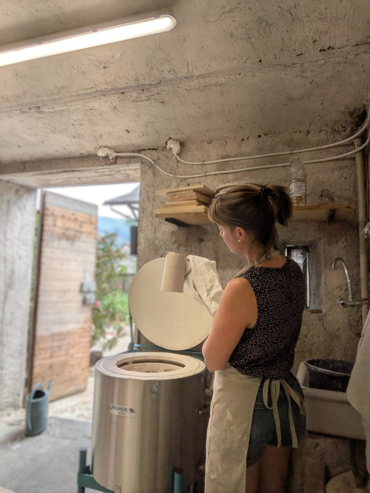
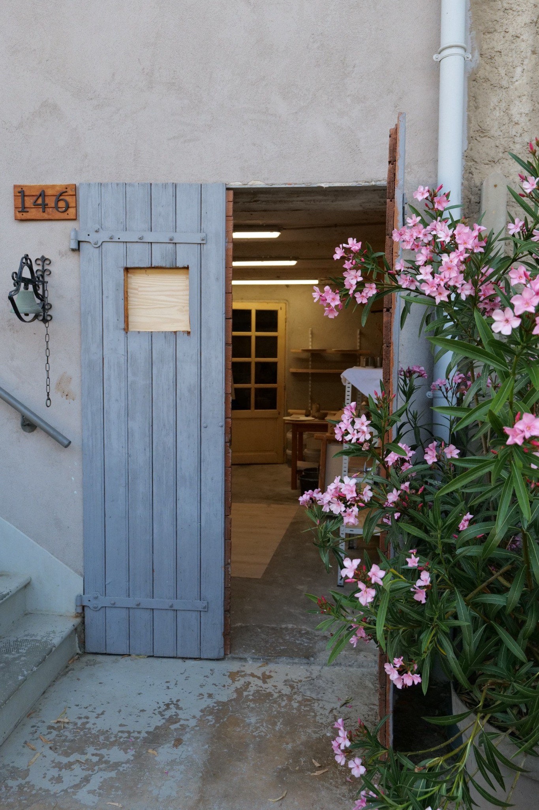
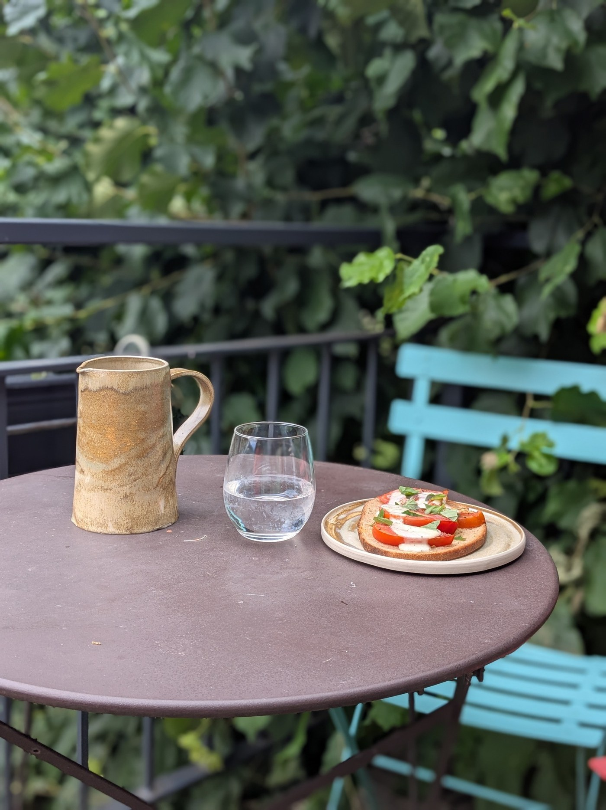

Céramique artisanale · Savoie
Atelier
Caroline Roux
Objets du quotidien façonnés à la main.
La terre. Le geste. Le temps.
Des pièces simples, sensibles et durables.
Je crée des pièces utilitaires en petites séries dans mon atelier de Saint-Baldoph, près de Chambéry.
Chaque pièce garde la trace du geste, les nuances de la terre et les variations de la cuisson.
Sélection
Les pièces





L’atelier
Façonné en Savoie.
Les pièces sont tournées, modelées, émaillées puis cuites dans mon atelier, à Saint-Baldoph, au pied des montagnes.
Je travaille en petites quantités, au rythme des séchages et des cuissons.
« Créer des objets que l’on a plaisir à prendre en main, à utiliser et à garder. »
La démarche
Entrer dans l’atelier.
La matière, les formes et les usages guident chaque collection. Les irrégularités légères et les variations d’émail font partie du caractère de chaque pièce.

Au quotidien
Des objets faits pour accompagner la vie.

Contact
Voir les pièces
et venir à l’atelier
Les pièces sont visibles à l’atelier sur rendez-vous.